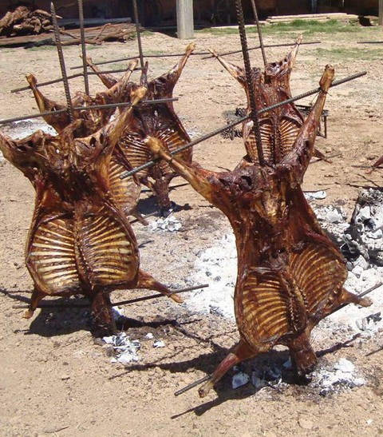
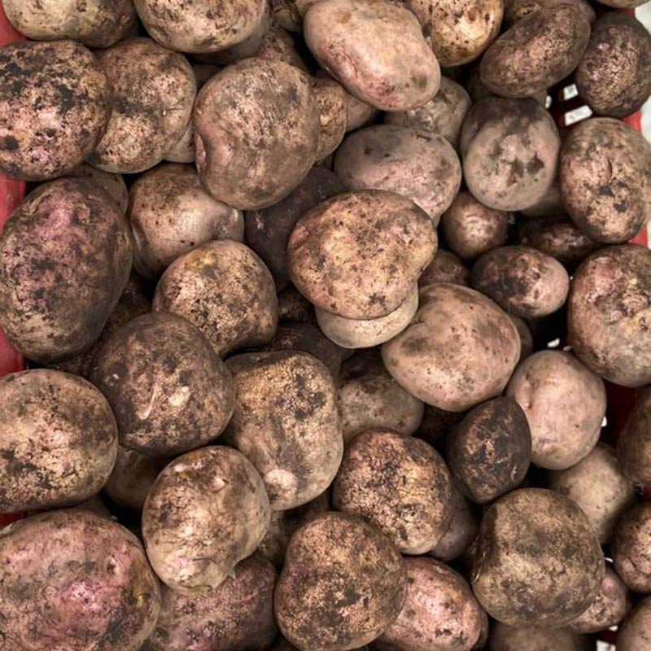

Ingredientes Locales
CHARQUE DE LLAMA
- En Tupiza, la carne de llama es un recurso importante. El charque de llama, carne deshidratada y salada, se elabora y consume de manera tradicional en la región, ya que la llama es un animal nativo de los Andes y es criado en la región sur del país, siendo esencial en platos como el charquecán.
CORDERO CRIOLLO
- El cordero criollo es un tipo de carne que se produce en las áreas rurales de Tupiza, donde la cría de ganado ovino es común debido al clima y la geografía. La carne de cordero local es valorada por su sabor y frescura, y se utiliza en platos como la cazuela de cordero y la chanfaina.

PAPA CRIOLLA
- Si bien la papa es común en los Andes, la región de Tupiza tiene sus propias variedades locales, conocidas como papas criollas, que son cultivadas en pequeñas parcelas por agricultores locales. Estas papas son esenciales en la gastronomía diaria y en platos tradicionales.

CHACHACOMA
- La chachacoma es una planta medicinal nativa de la región andina, incluida la zona de Tupiza, y se usa no solo en infusiones, sino también en algunas preparaciones locales debido a sus propiedades curativas. Aunque es más conocida por sus usos medicinales, también se utiliza en ocasiones en la cocina tradicional.
CHUÑO LOCAL
- El chuño producido en las alturas de Tupiza es característico por la forma en que se procesa la papa bajo las condiciones extremas del altiplano. Aunque el chuño se consume en otras partes de Bolivia, las técnicas tradicionales de deshidratación en Tupiza, utilizando las temperaturas frías de la noche andina, le otorgan un carácter único.
HABAS ANDINAS
- Las habas cultivadas en la región de Tupiza son de gran importancia en la dieta local. Estas habas tienen una textura y sabor particular debido a las condiciones de suelo y clima de la región, y son utilizadas en sopas y guisos típicos.
aji silvestre
- En las zonas rurales de Tupiza, crecen variedades de ají silvestre que no se encuentran fácilmente en otras partes del país. Este ají es utilizado en las preparaciones locales para dar un sabor picante distintivo a los guisos y sopas de la región.